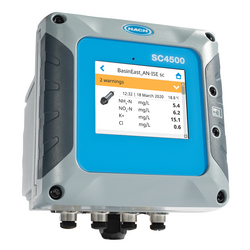
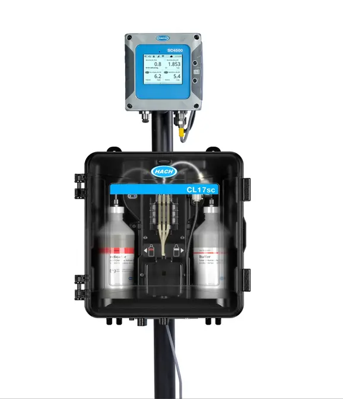
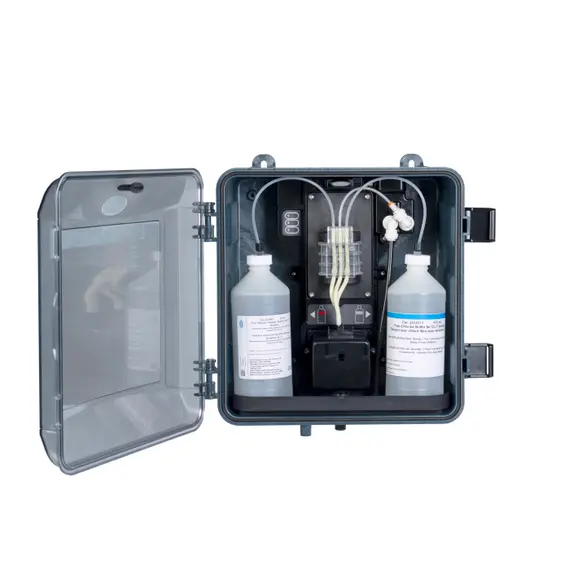
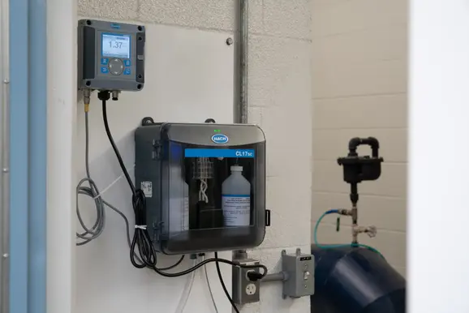
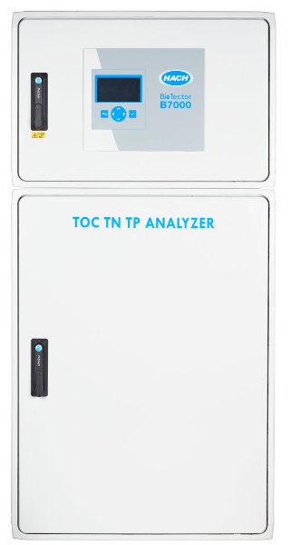

SC4500 Controller
Agua Instruments is an online water quality analyzer supplier in India, offering Hach controllers, online chlorine analyzers and TOC / TN / TP analysers for industrial, environmental and laboratory water quality monitoring.

The SC4500 Controller is designed to integrate easily into your current system while allowing you to upgrade as your capabilities advance, without having to replace inventory.
With a wide range of analog and digital connectivity options and the availability of intelligent instrument and data management features, the SC4500 unlocks the future, today.
Easy Adoption
The familiar experience of a modern touchscreen, the ability to use your current Hach sensors, and the same footprint as the SC200, make installation and integration seamless.
No Time for Downtime
Built-in predictive diagnostic software ensures measurement confidence and reduces the risk of unexpected equipment downtime by enabling proactive maintenance planning.
Connectivity Options
Provides local communication to SCADA or a PLC, as well as remote access through a secure, cloud-based connectivity option to integrate with Claros.
Connects to Claros — Hach's Water Intelligence System
Optional on all SC4500s
- Enables you to seamlessly connect and manage instruments, data, and process — anywhere, anytime.
- Get greater confidence in your data and improved efficiency in your operations.
- Works with analog and advanced digital protocols to Wi-Fi, cellular or LAN.
CL17sc Colorimetric Chlorine Analyzer




The Next Standard in Chlorine Analysis
The CL17sc online chlorine analyzer extends Hach's decades-long legacy as the leader in online chlorine analysis. It uses EPA-approved colorimetric DPD analysis to deliver accurate and reliable measurements of free or total residual chlorine.
Connection to Hach's SC controller platform gives you more flexibility to transfer, store, and interact with your chlorine measurement data, resulting in better understanding and control of your process.
A built-in flow meter, three-color status light, LED measurement cycle lights, and colorimeter window allow you to quickly and efficiently see that your CL17sc is functioning properly.
The CL17sc can also be used with Hach's Claros Water Intelligence System. With Claros Mobile Sensor Management, you can view measurements and instrument status anytime, anywhere, on any web-enabled device.
- Accurate, reliable online measurement of free or total residual chlorine.
- Compliant with US EPA 40 CFR 141.74.
- On-screen, guided workflows for routine maintenance tasks.
- Comprehensive diagnostics — built-in flow meter, multi-color status light, and colorimeter window.
- Available Claros Mobile Sensor Management for measurement data and status anytime, anywhere.
Hach BioTector B7000 TOC / TN / TP Analyser

Contamination levels in water impact treatment and re-use decisions. With data on contamination plus nutrient levels, water managers can make the most efficient and cost-effective decisions for treatment and reuse of important water supplies.
The Hach TOC analyser completes a full breakdown of each process sample to deliver trusted results.
- Improve treatment and re-use decisions with accurate and complete water quality data.
- Reduce costs on nutrient dosing while protecting critical treatment facilities with accurate C:N:P ratios.
- Spend more time managing the plant and less time collecting data with a robust, industrially designed online analyser.
- Detect product loss quickly to save valuable product and minimise risk of noncompliance.
Improve Wastewater Treatment
Capture changes in water quality with a direct analysis of Total Organic Carbon, Total Nitrogen, and Total Phosphorus in the most challenging samples.
Reduce Environmental Footprint
Comprehensive information about your incoming sample composition enables improved process control, decreasing utilities usage and related costs while reducing effluent environmental impact.
Protect Your WWTP & WWRP
TOC is a fast, reliable water analysis metric correlated to lagging indicators such as Chemical Oxygen Demand (COD) and Biochemical Oxygen Demand (BOD).
Superior Reliability
With a certified 99.86% uptime, critical process information is available when you need it most. Maintenance in most applications is done just twice per year.